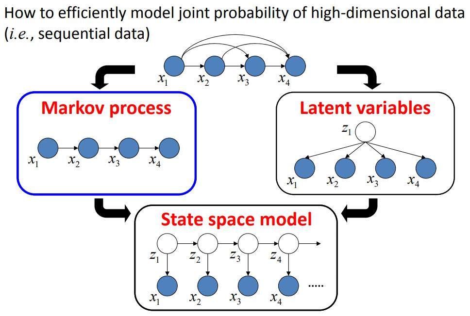
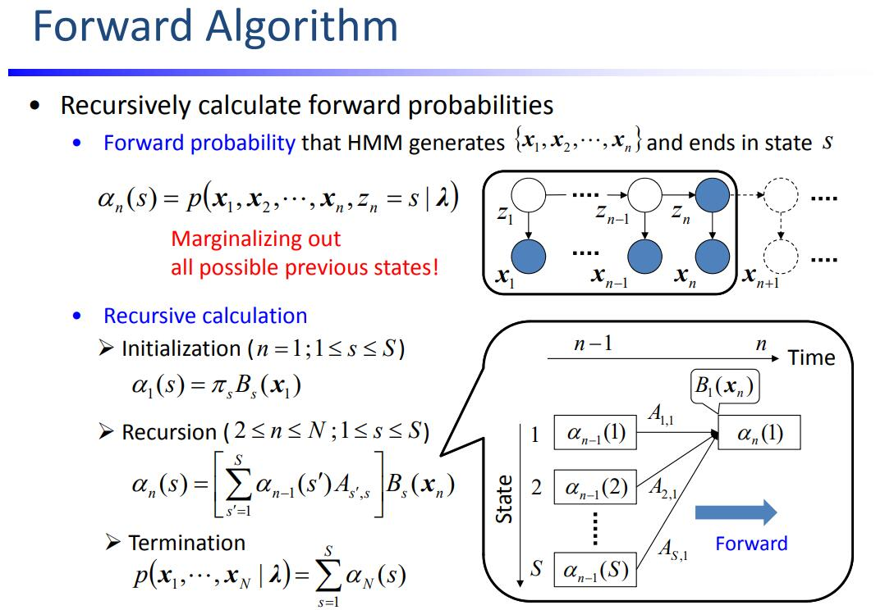
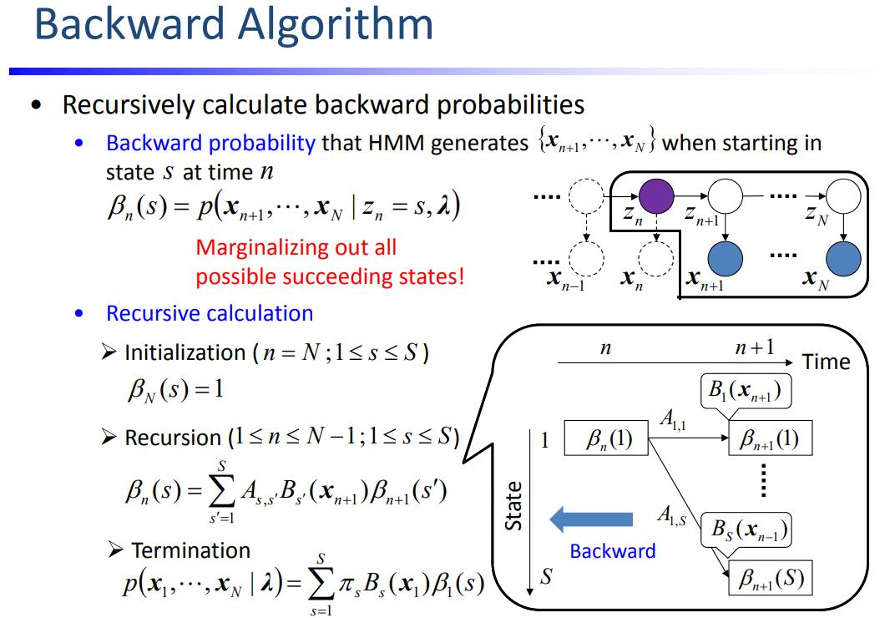

学习目标：
- 介绍HMM的定义与符号
- 讨论HMM的三个基本问题
- 概率计算问题：前后向算法
- 学习问题：Baum-Welch模型，EM算法计算参数
- 预测问题：Viterbi算法
- 每种算法用代码实现
- 参考李航的《统计学习方法》（在这里吐槽一下HMM那章下标 $i$ 乱用，有些算法不是很ok）
基本概念
HMM是一种时序数据模型。
设序列长度为 $T$ ，具有观测序列 $\mathbf X=\{\mathbf x_1,\dots,\mathbf x_T\}$ 和隐变量序列 $\mathbf Z=\{\mathbf z_1,\dots,\mathbf z_T\}$ 。
这里认为每一个观测都由对应的隐变量生成。隐变量序列是Markov链，$\mathbf z_t$只依赖于$\mathbf z_{t-1}$

变量都在有限的状态集里变化，观测的状态集为 $\mathbf S=\{\mathbf s_1,\dots,\mathbf s_M\}$ ，隐变量的状态集为 $\mathbf H=\{\mathbf h_1,\dots,\mathbf h_N\}$ 。
因此 $\mathbf x_t\in \mathbf S,\mathbf z_t\in \mathbf H,t=1,\dots,T$ 。
有时需要反向找到某状态是状态集里的第几个，定义 $findindex(\mathbf z_t)=i$ ，表示 $\mathbf z_t = \mathbf h_i$ 。
同理也有 $findindex(\mathbf x_t)=i$ ，表示 $\mathbf x_t = \mathbf s_i$ 。
隐状态间的转移矩阵为 $\mathbf A=[a_{ij}]_{N\times N}$ ， $a_{ij}$ 是从状态 $\mathbf h_i$ 转移到 $\mathbf h_j$ 的概率。
从隐状态到观测的发射矩阵 $\mathbf B=[b_{ij}]_{N\times M}$ ， $b_{ij}$ 是从状态 $\mathbf h_i$ 转移到观测 $\mathbf s_j$ 的概率。
初始状态概率向量为 $\mathbf \Pi=[\pi_1,\dots,\pi_N]$ 。鉴于初始时没有其他时刻转移到 $t=0$ ，设 $\mathbf z_0$ 有 $\pi_i$ 的概率属于 $\mathbf h_i$ 。
记 $\lambda=(\mathbf A, \mathbf B, \mathbf \Pi)$ ，为HMM中的参数的集合。
生成观测序列
输入：$T,\mathbf S, \mathbf H, \lambda=(\mathbf A, \mathbf B, \mathbf \Pi)$
输出：$\mathbf X$
例如：有4个盒子，每个盒子里有若干红球和白球。每次从某盒子抽某色的球，求该序列的颜色。
这个例子中加上约束：盒子之间转移的概率（转移矩阵），盒子里球的概率分布（发射矩阵）。
由于需要按照特定概率分布产生随机数，定义下面这个函数，输入分布，输出该分布下的随机数。
1 | import math |
1 | distribution = [0.4, 0.1, 0.5] |
[40043, 9990, 49967]
1 | def observation(T, S, H, A, B, pi): |
1 | T = 10 |
['box3', 'box4', 'box3', 'box2', 'box3', 'box4', 'box3', 'box4', 'box3', 'box4']
['red', 'red', 'white', 'white', 'red', 'red', 'red', 'white', 'white', 'white']
从转移矩阵可以发现一件有趣的事。$a_{12}=1$，这说明每次抽一号盒子之后，下一次一定抽二号盒子。
概率计算问题
输入：$\mathbf X,\lambda=(\mathbf A, \mathbf B, \mathbf \Pi)$
输出：$P(\mathbf X|\lambda)$
暴力不可解，借用DP的思想，一层一层算，引入前后向算法。
前向概率
从第 $t$ 层算第 $t+1$ 层，经典的DP的想法。
第一层是边界，特判。

1 | def cal_alpha(T, S, H, A, B, pi): |
1 | alpha = cal_alpha(T, S, H, A, B, pi) |
0.200000000000000 0.030000000000000 0.150000000000000 0.100000000000000
0.004500000000000 0.078000000000000 0.048600000000000 0.052000000000000
0.011700000000000 0.016758000000000 0.034320000000000 0.029976000000000
0.002513700000000 0.017799600000000 0.011886480000000 0.019549440000000
0.002669940000000 0.002180487600000 0.014513630400000 0.005980665600000
0.000327073140000 0.002542617648000 0.003068844408000 0.004440177792000
0.000381392647200 0.000466383270960 0.002666363417280 0.001446951104640
0.000069957490644 0.001013556609878 0.000477855580982 0.001307159095334
0.000152033491482 0.000182769806126 0.000597514033646 0.000485746192034
0.000027415470919 0.000273727373458 0.000167754631803 0.000331684138201
后向概率
从第 $t$ 层算第 $t-1$ 层，可以认为是 $x_t$ 按照概率 $a_{ij}$ 枚举了所有的可能。
最后一层是边界，特判。

1 | def cal_beta(T, S, H, A, B, pi): |
1 | beta = cal_beta(T, S, H, A, B, pi) |
0.001523984431183 0.001898572783199 0.001631730619454 0.001940679517304
0.002862946700712 0.005079948103944 0.003497930424029 0.004258903529088
0.012940968952800 0.004089923858160 0.011210009860800 0.006535421510400
0.007720551720000 0.018487098504000 0.010470861072000 0.016760061888000
0.031171644000000 0.025735172400000 0.032884171200000 0.030761001600000
0.038173800000000 0.103905480000000 0.047640720000000 0.085064640000000
0.198940000000000 0.127246000000000 0.176344000000000 0.134880000000000
0.301000000000000 0.284200000000000 0.293200000000000 0.268800000000000
0.700000000000000 0.430000000000000 0.640000000000000 0.480000000000000
1.000000000000000 1.000000000000000 1.000000000000000 1.000000000000000
前后向算法
结合前向和后向概率，对于中间的 $\mathbf x_t$ 前面用前向算法，后面用后向算法。
1 | def forword_backword(alpha, beta, t, T, S, H, A, B, pi): |
1 | for t in range(T): |
0 0.000800581614381
1 0.000800581614381
2 0.000800581614381
3 0.000800581614381
4 0.000800581614381
5 0.000800581614381
6 0.000800581614381
7 0.000800581614381
8 0.000800581614381
9 0.000800581614381
有什么用
不论 $t$ 的取值是什么，最后算出来的观测概率都是一样的。为什么要大费周章算第 $t$ 个观测的情况，这里埋个伏笔。
预测问题
输入：$\mathbf X,\lambda=(\mathbf A, \mathbf B, \mathbf \Pi)$
输出：$\mathbf Z$
在上面DP的过程中，记录第 $t$ 层的第 $i$ 个状态是前一层哪一个转移过来的，可以得到最优路径。
Viterbi算法
一开始我以为 Viterbi 算法和前向算法是一个东西，第 $t$ 层的每个节点都计算了从第 $t-1$ 层过来的所有概率之和。
实际上 Viterbi 算的不是和，而是从 $t-1$ 层过来的 $N$ 个概率的最大值。
前向算法好比是算最大流，$\alpha_t(i)$ 是第 $t$ 个时刻经过节点 $\mathbf h_i$ 的所有的可能。
Viterbi算法好比是求最短路，第 $t$ 个时刻经过节点 $\mathbf h_i$ 的路径有好多条，只需要选择其中概率最大的一条。
在计算最值的过程中，同时记录了转移到第 $t$ 个时刻节点 $\mathbf h_i$ 的上一层节点的标号。
1 | def viterbi(T, S, H, A, B, pi, X): |
1 | def get_solution(parent, T): |
1 | parent = viterbi(T, S, H, A, B, pi, X) |
X: ['red', 'red', 'white', 'white', 'red', 'red', 'red', 'white', 'white', 'white']
true Z: ['box3', 'box4', 'box3', 'box2', 'box3', 'box4', 'box3', 'box4', 'box3', 'box4']
viterbi: ['box1', 'box2', 'box1', 'box2', 'box3', 'box4', 'box3', 'box4', 'box3', 'box4']
YES: 7 NO: 3
错误率很高，准不准看心情。看来生成同一个观测的隐序列有好多条，概率大的那条和真实的那条，并不能保证更加重合。
预测缺失
输入：$\mathbf x_1,\dots,\mathbf x_{t-1},\mathbf x_{t+1},\dots,\mathbf x_{T},\lambda=(\mathbf A, \mathbf B, \mathbf \Pi)$
输出：$\mathbf x_t$
先计算出所有的 $\alpha,\beta,$复杂度为$O(TN^2)$，再根据 $\mathbf x_t=\mathbf s_k$ 更新出 $\alpha_t(i)$，复杂度为$O(N^2)$。$\beta_t(i)$ 不受 $\mathbf x_t$ 的影响，故不用更新。
分母是对两个隐变量进行积分。隐变量多一个，复杂度就要乘 $N$，尽量让隐变量越少越好。
1 | def normalization(distribution): |
1 | def predict(T, S, H, A, B, pi, X, t): |
1 | t = 0 |
[0.0008005816143812111, 0.0008919719706016694]
after normalization: [0.47300222662628943, 0.5269977733737106]
['white', 'red', 'white', 'white', 'red', 'red', 'red', 'white', 'white', 'white']
Truth: white Result: white
1 | t = int(T/2) |
[0.0008919719706016694, 0.0013705471229141035]
after normalization: [0.3942384279354817, 0.6057615720645183]
['white', 'red', 'white', 'white', 'red', 'white', 'red', 'white', 'white', 'white']
Truth: white Result: white
对 $M$ 个结果归一化，若概率比较接近，则结果比较不准确。概率差的越多越准。
学习问题
输入：$\mathbf X$
输出：$\lambda=(\mathbf A, \mathbf B, \mathbf \Pi)$
常规用监督学习的样本来估计出参数，但标注费用比较高，因此用非监督的学习方法来做。
借助：$P(\mathbf X|\lambda)$用最大似然估计参数，EM算法计算参数。
Baum-Welch模型
记给定观测和参数下的 $\mathbf z_t=\mathbf h_i$ 的概率
记给定观测和参数下的 $\mathbf z_t=\mathbf h_i,\mathbf z_{t+1}=\mathbf h_j$ 的概率
1 | def cal_gamma(T, S, H, A, B, pi, alpha, beta): |
1 | def cal_xi(T, S, H, A, B, pi, alpha, beta): |
算法步骤：
- 初始化模型参数 $\lambda=(\mathbf A^{(0)}, \mathbf B^{(0)}, \mathbf \Pi^{(0)})$
- 递推
- 反复迭代直到结束。
1 | def BaumWelch(T, S, H, A, B, pi, X): |
1 | T = 100 |
['box2', 'box1', 'box2', 'box3', 'box4', 'box4', 'box4', 'box3', 'box2', 'box3', 'box4', 'box4', 'box4', 'box3', 'box4', 'box4', 'box4', 'box3', 'box4', 'box3', 'box4', 'box3', 'box4', 'box4', 'box3', 'box4', 'box4', 'box3', 'box2', 'box3', 'box4', 'box3', 'box4', 'box4', 'box3', 'box4', 'box3', 'box4', 'box3', 'box4', 'box4', 'box4', 'box4', 'box4', 'box4', 'box4', 'box3', 'box4', 'box4', 'box3', 'box2', 'box1', 'box2', 'box3', 'box2', 'box3', 'box4', 'box3', 'box4', 'box3', 'box2', 'box3', 'box2', 'box1', 'box2', 'box3', 'box2', 'box1', 'box2', 'box3', 'box4', 'box4', 'box4', 'box3', 'box4', 'box3', 'box2', 'box3', 'box4', 'box4', 'box3', 'box4', 'box4', 'box3', 'box2', 'box1', 'box2', 'box1', 'box2', 'box3', 'box4', 'box3', 'box4', 'box3', 'box4', 'box4', 'box3', 'box4', 'box3', 'box4']
['red', 'red', 'white', 'red', 'red', 'white', 'red', 'red', 'white', 'red', 'white', 'white', 'white', 'red', 'white', 'white', 'red', 'white', 'white', 'red', 'white', 'white', 'red', 'white', 'white', 'white', 'red', 'red', 'red', 'red', 'white', 'red', 'white', 'white', 'white', 'red', 'red', 'white', 'red', 'white', 'white', 'red', 'red', 'white', 'red', 'white', 'red', 'red', 'white', 'red', 'white', 'white', 'red', 'red', 'red', 'red', 'white', 'red', 'white', 'red', 'white', 'white', 'white', 'white', 'white', 'red', 'white', 'red', 'red', 'red', 'white', 'white', 'white', 'red', 'white', 'white', 'white', 'red', 'red', 'white', 'red', 'red', 'white', 'red', 'white', 'red', 'red', 'red', 'red', 'white', 'white', 'red', 'white', 'white', 'red', 'white', 'red', 'white', 'red', 'white']
1 | N = len(H) |
1 | for n in range(100): |
A =
[0.25, 0.25, 0.25, 0.25]
[0.25, 0.25, 0.25, 0.25]
[0.25, 0.25, 0.25, 0.25]
[0.25, 0.25, 0.25, 0.25]
B =
[0.49, 0.51]
[0.49, 0.51]
[0.49, 0.51]
[0.49, 0.51]
pi = [0.25, 0.25, 0.25, 0.25]
1 | A = [ |
1 | for n in range(100): |
A =
[0.0, 1.0, 0.0, 0.0]
[0.24846367821110096, 0.0, 0.7515363217888992, 0.0]
[0.0, 0.2933646349456608, 0.0, 0.7066353650543393]
[0.0, 0.0, 0.3315243870373437, 0.6684756129626561]
B =
[0.009243586459035613, 0.990756413540964]
[0.002343559403560941, 0.9976564405964387]
[0.8930977369597577, 0.10690226304024238]
[0.4123984323282614, 0.5876015676717384]
pi = [5.000125928515478e-158, 2.953264517100414e-70, 5.776557121141218e-18, 1.0]
展望
- viterbi和学习参数效果挺差的，看点相关论文学习优化
- 老板说要结合多视角啊
- BW算法推导的地方有空再补上